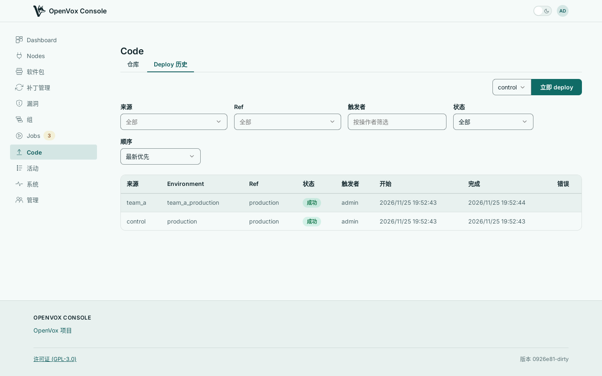

使用
Deploy 代码
从一个或多个 control 仓库把 Puppet 代码 deploy 到 openvoxserver 用于编译的 Environments 中。
控制台使用 g10k，把 control 仓库（git 中的 Puppetfile 和 manifests）中的 Puppet 代码 deploy 到 openvoxserver 读取的 environments 目录中。control 仓库的每个分支都成为一个 Environment。
查看 deploy 需要 code:read；启动 deploy 需要 code:deploy。
开启代码 deploy
在控制台知道 g10k 在哪里、要 deploy 什么以及放到哪里之前，代码 deploy 一直处于关闭状态：
| 设置 | 说明 |
|---|---|
CONSOLE_G10K_BIN_PATH |
g10k 程序。控制台的容器镜像已包含它并已设置好此项 |
CONSOLE_CONTROL_REPO_URL |
用于 deploy 的单个 control 仓库 |
CONSOLE_CODE_SOURCES_PATH |
或者改用一个声明多个仓库的文件（见下文） |
CONSOLE_CODE_DIR_PATH |
openvoxserver 读取代码的目录；控制台会 deploy 到其中的 environments 目录 |
CONSOLE_CODE_WEBHOOK_SECRET |
git 托管平台用来签名 webhook 的密钥 |
CONSOLE_CONTROL_REPO_URL 和 CONSOLE_CODE_SOURCES_PATH 不能同时设置：控制台会拒绝启动，而不是把两者合并。
控制台和 openvoxserver 必须共享该目录。在一台主机上使用软件包安装时，把 CONSOLE_CODE_DIR_PATH 指向 /etc/puppetlabs/code，并允许控制台的用户写入其中的 environments 目录。
使用容器堆栈时
生产 compose 文件不会把这些设置传递给控制台，也不会把 openvoxserver 的代码卷提供给它。请在旁边新建一个 compose.code.yml，把两者都加进去：
services:
console:
environment:
CONSOLE_CONTROL_REPO_URL: ${CONSOLE_CONTROL_REPO_URL:?set the control repository}
CONSOLE_CODE_DIR_PATH: /etc/puppetlabs/code
CONSOLE_CODE_WEBHOOK_SECRET_FILE: /run/secrets/code_webhook_secret
volumes:
- openvoxserver-code:/etc/puppetlabs/code
secrets:
- code_webhook_secret
secrets:
code_webhook_secret:
file: ./secrets/code_webhook_secret
然后在每条命令中把它放在主文件之后传入：
docker compose -f docker-compose.yml -f compose.code.yml up -d console
这种组合还没有像安装指南那样被完整地端到端验证过。如果 deploy 成功但 openvoxserver 看不到代码，请检查两个容器在 /etc/puppetlabs/code/environments 下显示的文件是否相同。
从多个 control 仓库 deploy
要从多个仓库 deploy，请在一个 YAML 文件中声明它们，并让 CONSOLE_CODE_SOURCES_PATH 指向该文件：
sources:
control:
remote: git@github.com:org/control-repo.git
prefix: false # branch production -> environment production
team_a:
remote: git@github.com:org/team-a-control.git
prefix: true # branch production -> environment team_a_production
private_key: /etc/openvox-console/keys/team_a
webhook_secret_file: /etc/openvox-console/team_a_webhook
- 来源名称只能包含小写字母、数字和
_，因为它会成为 Environment 名称的一部分。 prefix决定某个来源的分支所生成的 Environment 名称：true以来源名称作为前缀，false或不设置则不加前缀，设为字符串则以该字符串为前缀。两个来源不能得到相同的前缀，因此最多只能有一个不加前缀；否则控制台会拒绝启动。- 每个来源都可以有自己的 deploy key 和自己的 webhook 密钥。
新增的带前缀来源会 deploy 成功，但不会改变任何东西，直到有 Nodes 被分类到它的新 Environment 名称中。不会有任何机制自动把 Nodes 移过去。
Deploy
打开 Code。仓库标签页列出每个仓库及其 Environments 和最近一次 deploy；在某个仓库上点击 Deploy 会 deploy 它的 production 分支。Deploy 历史标签页上的立即 deploy 对默认仓库执行同样的操作。
无论运行多少个控制台实例，同一个 Environment 的 deploy 永远不会重叠。每次 deploy 都会出现在 deploy 历史中（附带启动者），也会出现在活动页面上。


每次 push 时 deploy
要在每次 push 分支时 deploy，请在你的 git 托管平台上为该仓库添加 webhook：
- URL：
https://console.example.com/api/v1/code-deploys/webhook，如果是多个来源中的某一个，则为https://console.example.com/api/v1/code-deploys/webhook/<source name> - Content type：JSON
- Secret：该来源的 webhook 密钥
- Events：pushes
控制台会根据密钥校验每次投递的签名（X-Hub-Signature-256 请求头），并 deploy 被 push 的分支。
解读仓库标签页
每个仓库显示两个 Node 计数，二者之间的差距才是有用的部分：
- 已分配：分类将其分配到该仓库某个 Environment 的 Nodes。
- 上报中：最近一次 Puppet 运行使用了其中某个 Environment 的 Nodes。
已分配但无上报，意味着代码已经 deploy，但还没有 Node 运行过。有上报但未分配，意味着 Nodes 在运行没有任何组分配给它们的代码——通常是某个已删除来源遗留下来的 Environment，或者某个 Node 在自己的 puppet.conf 中设置了 environment。
Size 是已 deploy 文件的大小，而不是磁盘占用：g10k 会在 Environments 之间共享模块，因此各仓库的大小会有重叠。
从配置中删除某个来源会停止它的 deploy，但会把它的 Environments 留在磁盘上，openvoxserver 会继续从中编译。如果你的本意是删除它们，请自行删除。